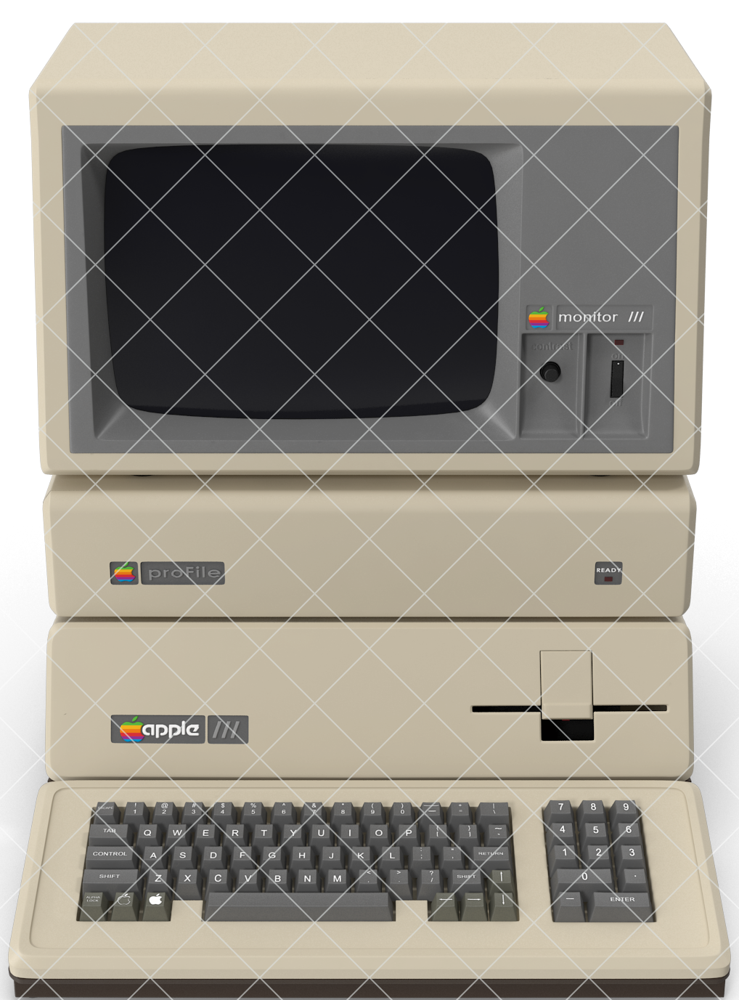
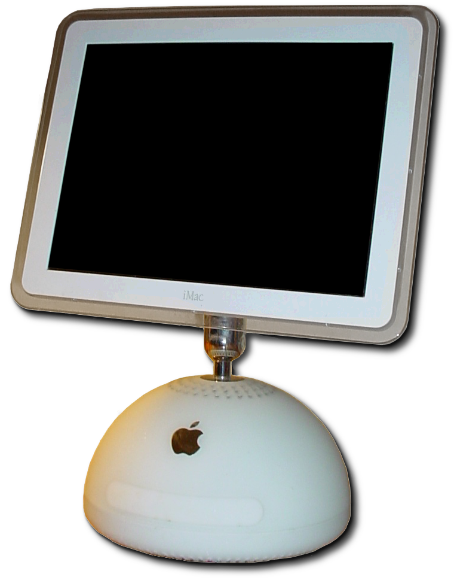
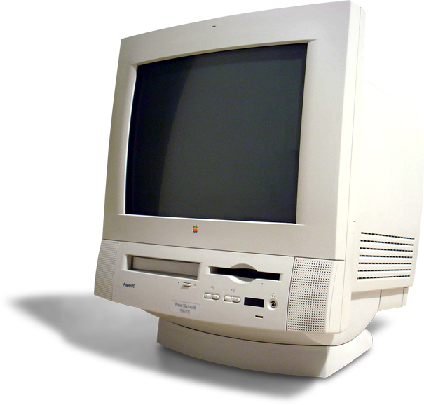
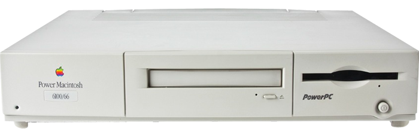

 El Apple III (frecuentemente escrito como apple ///) fue un ordenador personal diseñado, fabricado y comercializado por Apple Computer. Fue lanzado en mayo de 1980 y descatalogado el 24 de abril de 1984, tras devenir en el primer gran fracaso comercial de Apple. Su predecesor, el célebre Apple II, fue diseñado por Steve Wozniak cofundador de Apple. Creado como un equipo para el mercado de negocios empresariales, el equipo que diseñó el Apple III comenzó a trabajar a finales de 1978 bajo la dirección del Dr. Wendell Sander. Tuvo como nombre en código Sara, el nombre de la hija de Sander. Estaba dotada de un microprocesador de 8 bits Synertek 6502A a 2 MHz (el doble de la velocidad del Apple II), un máximo de 128 KiB de memoria RAM, teclado incorporado y una disquetera interna fabricada por Shugart, de 143 kB para discos flexibles de 5,25 pulgadas. Contaba con cuatro ranuras internas que aceptaban tarjetas para Apple II y era posible además conectarle periféricos adicionales a través de los dos puertos serie incorporados en la parte posterior. Apple III fue vendido en dos diferentes configuraciones que variaban entre los $3495 y los $3815 -el primero traía 128 KiB de RAM y el segundo venía con monitor-. Originalmente se prometió lanzar el Apple III en julio de 1979, pero su producción estuvo plagada de problemas durante todo el verano y parte del otoño. El problema de Apple III parecía ser que las placas y los circuitos estaban alojados en espacios demasiado pequeños, con inexistente ventilación, dando como resultado un sobrecalentamiento. Cuando el ordenador se encendía y se comenzaba a trabajar con él, los chips se sobrecalentaban y se movían de sus ranuras, punto éste en que el ordenador fallaba. El modelo fue lanzado en mayo de 1980. El 9 de noviembre de 1983 se lanzó una versión mejorada, Apple III Plus, al precio de 3000 dólares, que solucionaba los problemas de hardware de la III, incluía 256 KiB de memoria y presentaba un teclado al estilo de la Apple IIe. Pero para entonces, ya la Apple III había adquirido una reputación negativa y el mercado empresarial estaba moviéndose rápidamente hacia la IBM PC. El 24 de abril de 1984 Apple interrumpió la producción.
 El iMac G4 presentaba una pantalla LCD montada en un brazo ajustable sobre un hemisferio que contenía una unidad óptica de tamaño completo con carga de bandeja y un procesador de la cuarta generación de la serie PowerPC G4 74xx. Los componentes internos, como el disco duro y la placa base, se colocaron en el "domo" en lugar del panel LCD, ya que sería demasiado pesado. El brazo permitió que la pantalla sostuviera casi cualquier ángulo alrededor del fondo en forma de cúpula. El iMac G4 se vendió solo en blanco y no era translúcido como el iMac G3. La máquina se vendió con Apple Pro Keyboard y Apple Pro Mouse, que luego fueron rediseñados y renombrados Apple Keyboard y Apple Mouse, respectivamente. Los altavoces Apple Pro opcionales, que eran de mejor calidad que los altavoces internos, también estaban disponibles. Los altavoces Apple Pro utilizaron un adaptador único, diseñado para funcionar solo con algunos modelos seleccionados de Apple Macintosh. El iMac G4 originalmente incluía Mac OS 9 y Mac OS X, debido a que la máquina se lanzó el año en que se suspendió Mac OS 9. Al ejecutar versiones más nuevas de Mac OS X (Tiger y Leopard), la GPU GeForce4 MX del iMac G4 no era capaz de renderizar Core Image. Esto causa algunos problemas gráficos menores. Uno de estos problemas sería la falta del efecto dominó del Tablero cuando se introduce un widget. Otra sería una barra de menú opaca en Mac OS X Leopard. Originalmente se conocía como el nuevo iMac, mientras que el iMac G3 existente continuó vendiéndose durante varios meses. Durante este tiempo, Apple eliminó todas las pantallas CRT de su línea de productos. Sin embargo, los iMacs LCD no pudieron igualar el bajo precio del iMac G3, en gran parte debido al mayor costo de la tecnología LCD en ese momento. El iMac G3 era obsoleto en este punto, pero las máquinas de bajo costo eran particularmente importantes para el mercado educativo. Debido a este problema de asequibilidad, Apple creó el eMac en abril de 2002 y finalizó la producción del iMac G3. El iMac G4 se comercializó como el "iMac" hasta su interrupción, luego se etiquetó de forma retroactiva como iMac G4 para distinguirse del iMac G5 en agosto de 2004. Apple anunció que el iMac G4 tenía la capacidad de ajuste de una lámpara de escritorio, y fue apodado "iLamp", similar a "Luxo Jr.", que apareció en un cortometraje producido por Pixar, otra empresa del cofundador de Apple Steve Jobs . Uno de los anuncios de la máquina lo mostraba sentado en el escaparate de una tienda "reaccionando" a cada movimiento realizado por un transeúnte en la calle. Al final, cuando el hombre saca la lengua, el iMac responde abriendo su unidad óptica. [1] También fue conocido como el "Girasol". Los componentes internos están alojados en una caja de media esfera de 10,6 ", color blanco hielo con un cuello de acero inoxidable cromado que admite una pantalla LCD TFT Active Matrix de 15". Este modelo se envió con MacOS X 10.1 y MacOS 9.2 instalado con MacOS X seleccionado como predeterminado, así como un teclado, mouse y altavoces Apple Pro blancos como el hielo. A diferencia de algunos modelos anteriores de iMac que se enfrían por convección, la serie "Flat Panel" de iMac se enfría con un silencioso ventilador interno. El Gateway Profile fue uno de los pocos competidores de Wintel para el iMac G4 en el mercado de computadoras LCD todo en uno. Un revisor señaló que el perfil tenía una mejor potencia de procesamiento, debido a su Intel Pentium 4, mientras que el iMac se vio obstaculizado porque su chip G4 carecía de la memoria caché L2 de 1 MB que se encuentra en el Power Mac de gama alta. El iMac tenía claras ventajas en la calidad de la pantalla LCD (utiliza una LCD digital en lugar de una LCD analógica), ergonomía (particularmente el brazo flexible del monitor) y multimedia. El revisor concluyó que el iMac funcionó bien como una introducción al ecosistema de Macintosh, pero señaló que sus precios relativamente altos se acercaban a los de las computadoras portátiles, que eran portátiles y tenían pantallas LCD de mayor resolución
 La Power Macintosh 5500 es una computadora personal diseñada, fabricada y vendida por Apple Computer, Inc. desde febrero de 1997 hasta marzo de 1998. Al igual que las Power Macintosh 5260 y 5400 que la precedieron, la 5500 es un diseño "todo en uno" , construido alrededor de un procesador PowerPC 603ev que funciona a 225, 250 o 275 megahercios (MHz). Originalmente, Apple produjo el Power Macintosh 5500 para el mercado educativo como reemplazo del Power Macintosh 5400 del año anterior. Es el último All-In-One de Apple alojado en el factor de forma del Power Macintosh 5200 LC; su reemplazo, el Power Macintosh G3 All-In-One, introdujo un diseño significativamente diferente. Los modelos de 225 y 250 MHz se produjeron en beige y negro, mientras que los modelos más raros de 275 MHz eran solo negros. Puertos externos: los puertos externos incluyen dos puertos serie LocalTalk / GeoPort, un puerto SCSI DB-25, un puerto ADB, un puerto de entrada de sonido estéreo, un micrófono incorporado sobre el monitor, puertos de salida de sonido estereofónico, un conector para auriculares en la parte delantera , un miniconector estéreo en la parte posterior. Memoria: a diferencia del 5400, el 5500 no tiene memoria incorporada soldada. Hay dos ranuras DIMM estándar JEDEC (168 pines, 60 ns o más rápido, frecuencia de actualización de 2K, DIMM EDO con memoria intermedia de 5 voltios), que pueden admitir hasta 64 MB cada una, para una memoria máxima total de 128 MB, 8 menos que el 5400. Caché: el procesador utiliza 32 kilobytes (KB) [1] de caché L1, con una opción para un caché L2 de 256 o 512 KB (este último está disponible solo en el modelo de 275 MHz) que funciona en el bus de 50 MHz velocidad. Disco duro: el 5500 incluye un disco duro ATA más grande que su predecesor. La computadora viene con un disco duro de 2 gigabytes (GB) [2], pero el modelo de 275 MHz viene con una unidad de 4 GB; una unidad de CD-ROM SCSI más rápida (12x en los primeros modelos y 24x en el extremo superior). Video: una tarjeta gráfica ATI Rage IIc acelerada, que contiene 2 megabytes (MB) [1] de SGRAM dedicada y permite resoluciones de hasta 832x624 a 32 bits por píxel, 1152x870 a 16 bpp y 1280x1024 a 8 bpp. Está disponible un kit de conector de video opcional que agrega un puerto de salida DB-15 a la parte posterior; La salida de esta pantalla refleja la pantalla principal, adecuada para presentaciones. Disquete: el 5500 incluye la unidad de disquete estándar SuperDrive de 1.44 MB de Apple. CD-ROM: todas las configuraciones 5500 incluyen un CD-ROM de 12x o 24x. Multimedia: los 5500 vienen con tarjetas de expansión multimedia opcionales, que se conectan a través de cables internos. En los modelos europeos, se trataba de una tarjeta S-Video y una tarjeta sintonizadora de TV Philips que también tenía una entrada de audio. Los Black 5500 con esta configuración se comercializaron como Director Edition en Norteamérica y Australasia y la versión de 225 MHz tenía la frase impresa en el estuche
 El Power Macintosh 6100 (también vendido como Performa 6110 - 6118 y Workgroup Server 6150) es una computadora personal diseñada, fabricada y vendida por Apple Computer, Inc. desde marzo de 1994 hasta marzo de 1996. Es la primera computadora de Apple en utilizar El nuevo procesador PowerPC creado por IBM y Motorola. La carcasa de bajo perfil ("caja de pizza") fue heredada de los modelos Centris / Quadra 610 y 660AV, [2] y reemplazó la serie Macintosh Quadra que utilizaba el procesador Motorola 68040, la línea de estaciones de trabajo de gama alta anterior de Apple. Para el mercado de consumo, el 6100 fue renombrado como Macintosh Performa con números de modelo en el rango 6110 - 6118 que denota paquetes de software y tamaños de disco duro. [3] Se incluyeron una pantalla Apple Multiple Scan 15 y un teclado AppleDesign como parte del paquete. Para el mercado de servidores, se ofreció una variante con software de servidor adicional, llamado Apple Workgroup Server 6150. El 6100 fue descontinuado sin un reemplazo directo The 6100 was introduced alongside the Power Macintosh 7100 and Power Macintosh 8100 and occupied the entry-level role of the new Power Macintosh family. MacWorld's review of the 6100/60 noted that "Not only has Apple finally regained the performance lead it lost about eight years ago when PCs appeared using Intel's 80386 CPU, but it has pushed far ahead."[4] Performance of 680x0 software is slower due to the need for System 7.5's new Mac 68k emulation layer, but MacWorld's benchmarks showed noticeably faster CPU, disk, video and floating point performance than the Quadra 610 it replaced. The 60 MHz models were upgraded to 66 MHz in January 1995.[1] Apple also released a PC-compatible model of the 6100/66 called the Power Macintosh 6100 DOS Compatible. This version came with a PDS card with an Intel 80486 DX2/66 processor (without L2 cache) and a single SIMM RAM slot that uses the same type of RAM as in the 6100 itself. The card supports to 32 MiB of RAM, a Creative Technology Vibra 16 sound chipset, and also includes standard PC VGA and joystick ports. With this card, the 6100 is capable of running both the Mac OS interface and DOS/Windows 3.1 side-by-side, even on different monitors. The card could also use the main system RAM if there was no SIMM installed on the card.[5] Notable were the new startup and "sad Mac" chimes: instead of the electronic "bong" that was the previous norm, it played a guitar chord strummed by jazz guitarist Stanley Jordan, and instead of the "Chimes of Doom" arpeggio that played when there was a hardware error at startup, there was the sound of a car crashing and glass breaking.
Desarrollador= Santiago Herbes